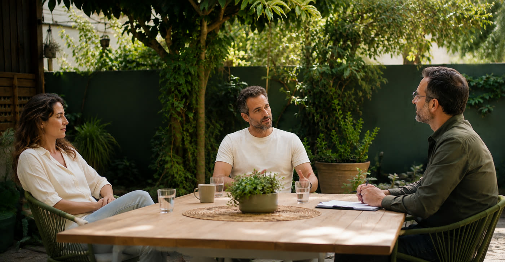

There comes a moment when the word divorce is no longer said only in anger. It stays on your mind even after the fight is over. Couples therapy before divorce makes room for the questions that come up at this moment: what has been hurt, what keeps pushing you apart, and whether there's a shared willingness to change.

Sometimes one of you is already talking about separating while the other still wants to try. Sometimes you're both exhausted and not sure whether the relationship is over - or just the strength to keep going the same way.
From the outside, the latest fight can look small: expenses, chores, time on the phone or a decision about the kids. From the inside, it carries years of loneliness, disappointment or a feeling of not being heard.
One says "We need to talk", and the other hears "Here we go again, I'm about to be told I'm wrong". One shuts down to stop the fight, and the other experiences the silence as pulling away. The more the pattern repeats, the harder it is to believe another conversation will lead anywhere different.
At this stage, a general promise that "from now on things will be different" is no longer enough. You need to understand what really happens between you in the hard moments, and what each of you is willing to actually do differently.
Nodded at least once? That doesn't mean the relationship is lost. It means it's time to talk about it with someone from the outside. An intro call doesn't commit you to anything.
The goal is set together with you, not in advance. For some couples it's an attempt to repair the relationship and restore peace at home. For others the first step is clarification: do we both want to continue? What would have to change for us to choose that? Are we willing to work on the change?
The process has room both for the wish to stay and for doubts. You don't need to hide thoughts of separating to protect the other person, and you don't need to promise in advance an outcome you're not yet sure of.
"Peace at home" can express a deep wish to protect the family and the life you've built. For that wish to mean something day to day, you need to define what the change will actually look like. For example:
Saying what hurts without belittling the other, and hearing criticism without going on the attack. You don't stop fighting, you learn to fight differently.
An hour alone, an evening with friends or quiet after a hard day - without the request sounding like a first step toward separation.
The needs of the one who stayed silent for years to keep the peace have a place in the relationship, and they're part of the change - not a threat to it.
Repairing the relationship isn't just about ending the fights. It requires looking at how you listen, respond, set boundaries and keep agreements. Even when there's love, you need to see whether you can build alongside it a way of living together that you both can live with.
You don't always come to therapy from the same place. One of you may be asking for another chance, while the other isn't sure any will to try is left.
In a situation like this, it's important to make room for the gap itself: what made one of you pull away? What does the other want to preserve? Is there a willingness to explore a joint attempt, and under what conditions?
The session isn't a place to recruit the therapist to convince your partner to stay. You can express your wishes, pain and hope, and at the same time listen to an answer that isn't always easy to hear. An attempt to rebuild requires a choice by both partners.
And if your partner isn't willing to come at all? You can start with an individual session. More on this in the article what you can do when only one partner wants couples therapy.
Identifying the pattern doesn't cancel responsibility for harm. It helps pinpoint what needs to change, and who is responsible for which part.
Alon uses NLP tools to look at language, interpretation and automatic reactions - and to pinpoint what you really want to say. For example:
"You never care about me"
“When I told you I'd had a hard day and the conversation ended right away, I felt alone. I'd like you to ask me what happened”
"You're always on your phone"
“When we sit together in the evening and the phone is between us, I feel there's no room for me. I'd love half an hour without screens”
"Once again I'm doing everything alone"
“This week I handled everything for the kids on my own. I need us to divide it up again, and decide together”
The goal isn't to swap every negative sentence for a positive one. It's to recognize how you express a need, what you assume about the other's intentions, and which reactions you want to change. The tools are tailored to the process, with no promise of repairing the relationship or of any particular outcome.
A decision to separate also deserves a place in the process. If that's the choice taking shape, you can explore together how to talk about it, how to set boundaries and how to handle the change - without a war, and without erasing what you had.
When there are children, we also address how you talk about and handle matters related to them, and the need to keep them out of the conflict between their parents. And if a teen is struggling during this time, emotional therapy for teens can be included.
Emotional support is not a substitute for mediation or legal advice. Agreements involving property, arrangements and divorce proceedings require the appropriate professionals.
Yes. You can reach out even when separation is already on the table. In the intro call we clarify the goal: an attempt to rebuild, working through the uncertainty, or emotional support around a decision that has already been made. The fact that the word was said and you still came here means that at least one of you hasn't closed the door yet.
We start with an individual session, where we explore your needs, boundaries and options. Individual work doesn't guarantee that your partner will join or that the relationship will recover, but it gives space to what you're going through and to the choices in front of you. More than once, it's the change in one partner that opens the door for the other.
There's no number that fits every couple. The scope of the process depends on the situation, the goals and how willing both partners are to take part. At the start we set expectations and a framework together, and along the way we pause and review progress, with no pressure and no commitment in advance.
No. The decision is always yours. Alon's role is to help you see the relationship clearly, talk about the hard things without getting hurt and understand what each of you really needs. With that picture, the decision is made by the two of you, not by someone from the outside.
Broken trust, whether infidelity or a secret that came to light, is one of the most common reasons couples come to therapy before divorce. Trust that has been broken doesn't come back on its own, but it can be rebuilt when both partners understand what it takes and are willing to work on it honestly. The process makes room both for the pain of the one who was hurt and for understanding what led there.
Not as a first step. When there is violence, threats, control or fear of speaking freely, a professional assessment of safety and of whether the setting is appropriate is needed first. It's important to mention this in your very first contact and to turn to dedicated support services, and in such cases you will be referred to the appropriate professional. It should not be assumed that a joint couples session is the right step.
At the clinic at 51 Dubnov St. in Rehovot, in an intimate therapy room or in the courtyard, and couples who live far away meet on Zoom with the same depth. Sessions are by appointment, and you can combine the two depending on what works for you.
Maybe you want to save the relationship but don't know how. Maybe you're already thinking about separating and want to understand whether there's still an option worth exploring.
You don't have to know in advance where the road will lead. You can start with a question that's hard to answer alone - in an intro call where you share what you're going through and see whether this kind of guidance is right for you.

Alon Shemesh is an emotional therapist and personal development coach, a graduate of the Tut Tikshoret school and holder of an NLP Master certificate. Sessions take place at the clinic in Rehovot or on Zoom from anywhere, at a pace that suits you.
Every process is built around what you bring into the room, not around a ready-made template. The first step is a short intro call, with no commitment.
Get to know me Couples Therapy
What can you do when only one partner wants couples therapy?
You suggested going together and the answer was no. What you can still do when only one of you is ready to start. Find out more
Read →
Couples Therapy
What can you do when only one partner wants couples therapy?
You suggested going together and the answer was no. What you can still do when only one of you is ready to start. Find out more
Read →
 Workshops & Talks
Loving is easy. Keeping love alive - nobody ever taught us that
In love but drifting apart? The fight beneath the fight, the love languages and small steps that bring closeness back. Read the full guide.
Read →
Workshops & Talks
Loving is easy. Keeping love alive - nobody ever taught us that
In love but drifting apart? The fight beneath the fight, the love languages and small steps that bring closeness back. Read the full guide.
Read →
 Couples Therapy
Couples therapy before divorce: what else can be done
The word divorce has already been said at home and you're not sure you meant it. What else is worth exploring before you decide. Read more.
Read →
Couples Therapy
Couples therapy before divorce: what else can be done
The word divorce has already been said at home and you're not sure you meant it. What else is worth exploring before you decide. Read more.
Read →
In Rehovot or on Zoom. A personal conversation with no commitment - you can come together, or start on your own.
To be clear: the guidance and emotional therapy offered by Alon Shemesh are not a substitute for psychological or psychiatric treatment. Alon is not a psychologist or a psychiatrist, and some situations require diagnosis or treatment by a mental health professional - in such cases you will be referred to the appropriate professional.
Before you go - have you heard about the December 1 seminar?
Alon will get back to you soon to confirm your place and share payment details. If it's urgent, you can also WhatsApp 054-3333265.